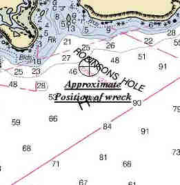

Link Index
MWDC
Home Page
Shipwrecks Page
Albert Galatin
Alice M. Colburn
Alice M. Lawrence
Barge and Crane
California
Charles S. Haight
Chelsea
Chester Poling
City of Salisbury
Corvan
Dixie Sword
Edward Rich
French Van Gilder
Henry Endicott
Herbert
Herman Winter
Hilda Garston
HMCS St. Francis
James Longstreet
John Dwight
Kershaw
Kiowa
Lackawanna
Lunet
Mars
Pemberton
Pendleton
Pinthis
Port Hunter
Pottstown
Romance
Seaconnet
Trojan
USS Grouse
USS New Hampshire
USS Triana
USS Yankee
USS YSD
Vineyard Sound
Lightship
|
Description: Freighter; Steel
Dimensions: length - 281.7 ft. , width - 39.7 ft. ; depth - 15 ft.
Tonnage: gross - 2169 , other - Under Deck - 1916
Propulsion: Steam; Single propeller.
Machinery: (1) 274 Nominal Horse Power, Triple expansion steam engine with cylinder diameters 22", 36", 60" and a stroke of 42"; 2 single ended steel boilers, 4 corrugated furnaces; 1 Donkey boiler.
Cargo: 5770 bales of hay
The Shipwreck
Date Sunk: January 23, 1900
Cause: Collision
Location:Vineyard Sound, southwest end of Naushon Island.
Coordinates: Latitude, 41o - 26' - 30" N Longitude, 70o - 48' - 00" W
Loran:
After loading a cargo of Hay at New London, the steamer Ardandhu was on her way to Halifax where she was to load potatoes, fish and General Merchandise, the whole bound for Havana, Cuba. This was to be the freighter's first and last voyage for the Munson Steamship Line of New York City.
At 3:30AM, January 23rd, while off Robinson's Hole, Vineyard Sound, Ardandhu came into collision with the Metropolitan liner Herman Winter, bound from Boston for New York. Striking amidships, the liners' bow nearly cut Ardandhu in half.
There had apparently been a misunderstanding of whistle signals. Officers and crew of the Metropolitan liner claimed they made a single whistle blast indicating intent to go to the right, leaving Ardandhu on the port hand. The crew of Ardandhu claimed Herman Winter made two blasts indicating she intended to pass the eastbound steamer to the left. "This would have put the Ardandhu directly across Herman Winter's bow, and heading for shore, in which position she was when the collision occurred."
Ardanhu's watertight compartments kept the vessel from sinking immediately and Herman Winter stayed in the breach until the freighter settled away as the compartments filled. There was a rush by the crew to get off their stricken vessel and it was thought that all had been saved until a head count revealed the engineer and second officer were missing.
Herman Winter stood by Ardandhu looking for signs of life. The freighter drifted onto the southwest end of Naushon Island and settled by the stern, the bow sticking out of the water. After accessing that their own vessel was secure Herman Winter started for Vineyard Haven to report the incident.
January 24th, Captain Dundas returned to the wreck site with the Boston Towboat Wrecking Company's agent. They found that the freighter had slid off the bar on which she stranded and was now lying on an even keel in 60 feet of water, the masts and smokestack breaking the surface. As the wreck lay dangerously close to nearby shipping lanes in was considered a hazard to navigation.
Back to Top
Dive Site Conditions
Depth in feet: maximum - ; minimum -
Visibility in feet: average -
Click on the image to go to the MapTech Map Server,
for additional navigation information.

Back to Top
Historical Background
Constructed: year - 1893; where - Belfast, Ireland
builder - Workman, Clark & Co. Lim.
Construction details: Single steel deck and a wood sheathed steel Spar Deck; Poop Deck, 23 feet long; Bridge Deck, 70 feet long; 4 Cemented Bulkheads; Water Ballasted in a 202 foot long, Cellular constructed, Double Bottom; Electric Lights
Crew: 31 ; Master: G. Dundas(1898)
Owners: Clark & Service, Glasgow; Munson Steamship Line, New York
Home or Hailing Port: Glasgow
Former Name(s), date(s):
Official number: 102594 Country: Britain.
Other Comments: Engines and Boilers built by Workman, Clark & Co. Lim.
Back to Top
Salvage
The Merritt Wrecking Company was contracted to work on the freighter. On January 25th divers reported favorably on the possibility of floating the steamer. However, being in an exposed position, heavy seas and strong currents would make the cost of raising her to great. By the 29th it was assumed the vessel would not be raised.
February 12th Ardandhu's owners closed a contract with the Merritt Wrecking Company to raise the vessel. Local wreckers thought it would be a large and expensive job due to the currents. It was not until April that the Merritt Wrecking Company's steamer I.J. Merritt was able to visit the wreck site to determine the feasibility of raising her. They found the steamer had settled 15 feet into the mud and sand, which would make the salvage prohibitively expensive.
October 13th work commenced on the task of blowing up the wreck. By November 14th the Government was still dynamiting Ardandhu's remains.
Back to Top
Sources:
Lloyds Register of Shipping; 1899-1900
MapTech Mapserver
New York Maritime Register; Jan. 24 & 31, Feb. 14, Apr. 25, Oct. 1, Nov. 21, 1900
New York Times; January 24, 1900
Back to Top
These files are under construction. Any information, specifically dive site related, would be greatfully appreciated.
Send comments to: Chris Hugo
Copyright © 2000 by Christopher C. Hugo
Massachusetts Board of Underwater Archaeological Resources
All Rights Reserved
|